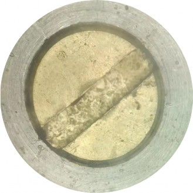

Article
College of Pipeline and Civil Engineering, China University of Petroleum (East China), Qingdao 266580, China
* Correspondence: upczjl@upc.edu.cn (J.Z.); liyx@upc.edu.cn (Y.L.); Tel.: +86-0532-86981223-301 (J.Z.);
+86-0532-86980919 (Y.L.)
Abstract: Pressurized liquefied natural gas (PLNG) is a new natural gas liquefaction solution pro- posed in recent years for reducing the construction and operating costs of floating liquefied natural gas (FLNG). For natural gas, the liquefaction temperature is strongly influenced by the pressure; when the pressure increases, the liquefaction temperature of natural gas increases accordingly. The increase in the liquefaction temperature of natural gas leads to a higher solubility of impurities such as carbon dioxide, which means that the pretreatment standards for liquefied natural gas can be reduced. Therefore, the use of PLNG technology can simplify pretreatment plants and significantly reduce construction and operating costs. In order to better apply PLNG technology to FLNG, it is necessary to understand the solubility of carbon dioxide in pressurized LNG and the phase change during liquefaction. To achieve this, experimental setups are needed to simulate the temperature and pressure environment of the LNG to obtain the relevant data and observe the relevant phenomena. After a literature research and analysis of the advantages and disadvantages of previous experimental setups, several improvements are proposed in this paper, and based on this, a visualization device is designed for studying the liquid–solid-phase equilibrium experiment of CO2 in PLNG. The device has a pressure resistance of 20 MPa, a minimum operating temperature of 77 K, and a variable volume function. It is also equipped with a sapphire window to be able to observe the inside of the device. In order to verify the superiority of the device, experiments were conducted using the device to verify the pressure resistance, variable volume, and visualization functions of the device. The experimental results show that the experimental device designed in this paper does have a certain superiority.
Citation: Zhu, J.; Li, Z.; Li, Y. Design of a Device and System to Study the Liquid–Solid-Phase Equilibrium Experiment of CO2 in PLNG. Energies 2023, 16, 3045. https://doi.org/ 10.3390/en16073045
Academic Editor: Fabio Polonara
Received: 13 February 2023
Revised: 14 March 2023
Accepted: 25 March 2023
Published: 27 March 2023
Copyright: © 2023 by the authors. Licensee MDPI, Basel, Switzerland. This article is an open access article distributed under the terms and conditions of the Creative Commons Attribution (CC BY) license (https:// creativecommons.org/licenses/by/ 4.0/).
Natural gas is an efficient, clean, eco-friendly, and low-carbon energy source, so the demand for natural gas has been growing for several years and it will continue to grow in the coming years [1]. The U.S. Energy Information Administration (EIA) estimates that the global energy demand will grow by 18% by 2035. Of this, natural gas will meet approximately 40% of this additional demand [2].
Offshore natural gas resources are more abundant compared to onshore ones. How- ever, in addition to large fields located offshore, a large portion of offshore gas resources are located in deep and distant waters and are more dispersed. Traditional offshore gas extraction includes onshore liquefaction plants for liquefaction, offshore platforms for exploration and the pre-processing of gas, and subsea pipelines for the transportation of gas [3]. This approach is very expensive to build and operate and does not make economic sense for developing small- and medium-sized oil and gas fields deep offshore. Moreover, the safety risks associated with the laying of subsea pipelines are high [4]. Therefore, the floating liquefied natural gas (FLNG) or floating, production, transport, and offloading (LNG-FPSO) solution was proposed. FLNG is essentially a collection of all the necessary

Energies 2023, 16, 3045. https://doi.org/10.3390/en16073045 https://www.mdpi.com/journal/energies
steps to process natural gas from natural gas into LNG. In order to adapt to the harsh offshore environment and the limitations of space constraints as well as better economics, the offshore operation of FLNG is required to meet the needs of compactness, flexibility, efficiency, and safety [5]. Moreover, the portion related to the refrigeration and liquefaction process accounts for a significant portion of the total cost of an LNG project [6,7]. Therefore, reducing the costs in the refrigeration and liquefaction processes is critical to reducing the total cost of FLNG.
The introduction of PLNG [8] technology provides a new solution for the liquefaction process. Compared with traditional LNG technology, PLNG technology is stored and transported under higher pressure, and its corresponding liquefaction temperature is significantly improved. The increase in liquefaction temperature means that less cooling is required in the natural gas liquefaction process, which in turn reduces the energy consumption of the liquefaction process and allows the simplification of the liquefaction plant [9]. At the same time, the higher temperature makes the solubility of impurities such as CO2 in natural gas much higher. The traditional liquefaction process needs to remove CO2 to 50 ppm, and PLNG technology makes this standard greatly relaxed, making the simplification of the pretreatment unit possible. The simplification of the liquefaction system and pretreatment unit will greatly reduce the equipment investment and floor space of the entire unit, resulting in a significant reduction in energy consumption and a much higher economy of the entire liquefaction process [10,11].Therefore, to study the solubility and phase-change patterns of impurities such as CO2 in LNG in the PLNG temperature zone, it is necessary to construct a low-temperature environment and simulate the temperature and pressure conditions of the liquefaction process for experiments.
Shen et al. [11,12] constructed an experimental device for testing the solubility of CO2 in pressurized LNG based on the static analysis method. The pressure-resistant reactor is placed in a thermostatic bath wrapped with heating tape, and the thermostatic bath is placed in a liquid nitrogen dewar. In addition, the cold nitrogen volatilized by the liquid nitrogen provides cold energy, and the temperature is adjusted by the heater. Xiong [13] improved on this and used the apparatus to perform gas–solid-phase equilibrium (SVE—solid–vapour equilibrium) experiments of CO2 in natural gas. The experimental apparatus built by Riva et al. [14] added a pneumatic RORSI sampler compared to that of Shen et al. and studied the effect of nitrogen and oxygen on the solubility of CO2 in methane liquid and vapor at low temperatures. Sampson et al. [15] built a small high-pressure- and low-temperature-tolerant visualization device using flowing liquid nitrogen to provide cooling and temperature regulation by a heater. They used this device to perform constant pressure-cooling solidification experiments of benzene in methane at low temperatures and obtained the kinetics of benzene solid formation in methane.
To summarize the characteristics of the above devices, the experimental devices built by Shen et al. [11,12] and Xiong [13] and Riva [14] have a large volume and good sampling facilities, but no visual window for observing the phenomena during liquid–solid-phase equilibrium (SLE—solid–liquid equilibrium) experiments; the small visualization device built by Sampson et al. [15] is able to observe the experimental phenomena inside through a sapphire window, but its volume is small and not suitable for conducting experiments. However, its small volume makes it inappropriate for sampling operations. Therefore, there is a need to design a device that combines the advantages of the above-mentioned devices, allowing both the measurement of the solute solubility and the observation of the solute precipitation process.
For this purpose, this paper designs an experimental apparatus for studying the liquid– solid-phase equilibrium experiment of CO2 in PLNG that can work at low temperature and high pressure, with a visualization function. It can provide the required low-temperature environment and pressure conditions for the experiments, and at the same time can observe and analyze the process of the solid precipitation of carbon dioxide.
In the introduction, the existing typical devices for liquid–solid-phase equilibrium experiments are briefly introduced. Taking the different types of experimental devices built by Shen [11,12] and Sampson [15] as examples, the research status of the device is analyzed. As shown in Figure 1, the experimental device built by Shen in [11,12] was designed based on a static analysis. The static analysis method refers to filling a certain amount of gas to be tested into a closed pressure vessel and providing a constant temperature environment for the reactor. When the system to be tested reaches a constant pressure in a constant temperature environment and remains for a period of time, it is considered that the system to be tested is fully stable and reaches equilibrium. At this time, the liquid-phase sample can be taken to measure the components of the equilibrium system to obtain the solubility of a component. During the experiment, the gas to be tested was filled into the equilibrium kettle and placed in a constant temperature bath filled with insulation materials at the bottom. The pressure of the equilibrium kettle was 6 MPa. The constant temperature bath is suspended in a dewar bottle containing liquid nitrogen, and the cold nitrogen emitted by the liquid nitrogen provides cold energy for the constant temperature bath. The heating zone wrapped outside the thermostatic bath is used for temperature regulation. The volume of the equilibrium still is 350 mL. When a very small amount of the liquid-phase sample is extracted from the capillary near the bottom of the equilibrium still,
it can be considered that the equilibrium will not be destroyed.
As shown in Figure 2, the small visualization device built by Sampson et al. [15] has a volume of 3.5 mL and a working pressure of up to 20 MPa. It is placed in a large-volume vacuum chamber, and the liquid nitrogen dewar with a liquid nitrogen pump provides it with flowing liquid nitrogen. The bottom of the kettle is fitted with a copper block connected to an internal copper finger that provides a subcooling point for the observation of the solid phase. The kettle wall and the copper block each have a temperature control system that includes a mass flow controller at the cold nitrogen outlet to control its flow rate, a heater, and a temperature controller connected to the heater.
This paper foresees the design of a comprehensive device that has sufficient volume to ensure that continuous sampling does not disrupt the equilibrium that has developed inside the device, as in the device in Figure 1. On the other hand, the device will be able to withstand high pressures up to 20 MPa, as in the device in Figure 2, and we will be able to observe the liquid–solid equilibrium experiments through a window. In addition, a variable volume function was added to broaden the scope of use of the experimental setup. The improved design and the corresponding parameter selection will be described in Section 3.
Based on the design ideas in Section 2, this section will analyze the improvement options line by line and perform the corresponding selection of the operating parameters to obtain a comprehensive experimental setup that meets expectations. Specific descriptions of the improvement options and parameter selection and their roles will be included in the design details of the main components in Section 4 and in the safety design in Section 5.
This subsection proposes some improvements based on the strengths and weaknesses of the existing apparatus in Section 2 and the expected goals for the apparatus in this paper.
Operate at High Pressures and Low Temperatures
The two typical devices in Section 2 have a pressure resistance of 6 MPa and 20 MPa, respectively. In order to make the device meet a larger range of experimental needs, the maximum design pressure of the design device is 20 MPa. The existing units are cooled by liquid nitrogen, so the reactor is required to withstand a liquid nitrogen temperature of 77 K. The reactor wall is equipped with a low-temperature fluid channel, and the lowest working temperature can reach 77 K (i.e., the temperature of liquid nitrogen at atmospheric pressure). Therefore, this device can meet a variety of temperature and pressure conditions.
In order to observe the phenomena in the experimental process such as the liquid– solid-phase equilibrium, the design of the device in this paper requires the inclusion of an imaging system to realize the visualization function. The imaging system consists of a high-pressure-resistant sapphire window, Leica microscope and supporting image software, camera, etc. to realize the visualization function.
Independent Temperature Control System
In a reactor, solids will always be preferentially generated in the colder region, so for better observation of solids generation, the reactor is equipped with a subcooling point that constrains the solids generation space. The temperature of the subcooling point needs to be lower than the bottom temperature of the kettle at all times, so the subcooling point and the kettle need to be controlled by two separate temperature control systems.
Continuous Sampling Is Possible
When the sample volume is very small relative to the total sample volume, the dis- turbance to the system from the sample volume is not sufficient to disrupt the phase equilibrium of the system. Therefore, by expanding the volume of the reactor to 300 mL, the disturbance to the system during sampling can be greatly reduced, and continuous experiments or multiple sampling can be performed. At the same time, the device has both gas- and liquid-phase sampling ports, so that sampling can be performed simultaneously to meet a variety of sampling requirements.
When the internal volume of the reactor is too large for the experiment itself and is not adjustable, it may limit the applicability of the device, so a variable volume function is added to the device. Moreover, this function provides the role of regulating the internal pressure, which can solve the problem of insufficient internal pressure but results in the inconvenient pressure adjustment by air inlet.
The bottom of the reactor is designed with a piston structure, which is driven by hydraulic oil; it can be used to adjust the volume of the reactor according to the demand or for the fine adjustment of the pressure inside the reactor.
When the molecular masses of the components in the sample to be measured differ greatly, rapid stratification may occur, which can adversely affect the experimental results. Therefore, a stirring function is added to the reactor.
The reaction kettle is equipped with a rubidium magnet-stirring bar, which is mag- netically coupled with the vacuum-stepping motor inside the piston to achieve sufficient mixing of the working mass in the kettle to obtain better experimental results.
In summary, it is expected in this paper that with the improved design, the present experimental apparatus and system can visualize the solid formation process, allowing temperature control, continuous sampling, variable volume, and stirring at low temperature and high pressure.
Selection of Working Parameters
The following experimental requirements for the determination of the solubility of carbon dioxide in LNG and the analysis of the solid formation process are used as the basis for the selection of the operating parameters of this device.
The liquefaction temperature of LNG at atmospheric pressure is about 112 K. Liquid nitrogen (77 K at atmospheric pressure) is mostly used in experiments to provide cold for the liquefaction process [16]. Therefore, the minimum operating temperature of the
experimental setup should be set to 77 K, which means that it can withstand the liquid nitrogen temperature.
The volume of LNG increases dramatically after gasification, and the pressure in the limited space will rise sharply [17], which will be dangerous if the container cannot be relieved quickly and has poor pressure resistance. Therefore, in order to avoid damage to the equipment and injury to the experimenter due to the pressure increase caused by the rapid vaporization of LNG caused by the failure of refrigeration, the design pressure of this device is set at 20 MPa to extend the operation time in case of accidents, and also to meet the needs of experiments under higher pressure conditions.
In order to determine the content of carbon dioxide in the liquid phase after the system reaches phase equilibrium, the liquid phase after equilibrium needs to be sampled and detected for processing. Take the gas chromatography detection method as an example: the sample volume of the gas chromatograph is 1 mL of gas, and the volume of gas used for purging before each injection is about 200 times. Based on the estimated volume ratio of LNG before and after gasification, 1/3 mL of the liquid-phase sample is sufficient [11]. In addition, in order to ensure that the phase equilibrium in the reactor is not destroyed, the liquid-phase sampling volume should be as small as possible. Let the ratio of the sampling volume to the total volume be 1:800, and the equilibrium kettle volume be 300 mL.
This section describes the specific design of the experimental setup and the main components of the system for studying the liquid–solid-phase equilibrium experiment of CO2 in PLNG at low temperature and high pressure, including the imaging system with a visualization of the reactor, the vacuum chamber, the temperature control system, and the measurement system.
Imaging System and Visualization Reactor
The imaging system was based on a motorized stereo microscope (S9D, Leica Mi- crosystems), using a digital camera to collect images and illumination provided by the microscope’s own LED light source; in addition, the device used a planar compound achro- matic objective with a long working distance (61.5 mm). Based on the design pressure and visualization requirements of the reactor, sapphire was chosen as the visualization window material, and its thickness was selected to be 15 mm after strength calculations.
The sapphire glass of the vacuum chamber top cover is designed to be 5 mm thick according to the pressure requirement (a detailed description will be given later). In order to obtain a clearer image, the distance from the outer surface of the sapphire glass of the vacuum chamber to the bottom of the measurement cell of the reactor should not exceed the working distance of the microscope. The working distance of the microscope is 61.5 mm, minus the thickness of two pieces of sapphire glass, while appropriately reserving a certain installation distance; the depth of the reactor is set at 19 mm. Based on the volume of the reactor, 300 mL, the inner diameter of the reactor is selected as 82 mm. According to the design pressure and temperature requirements, the material of the reactor is selected as titanium alloy TC-4. In order to facilitate the sealing, the diameter of the sapphire glass is designed to be larger than the inner diameter of the reactor, which can be pressed in the upper part of the inner chamber of the reactor; at the same time, it is smaller than the outer diameter of the reactor, so that it can be completely placed inside the reactor and clamped by flanges and bolts. After experimental testing and literature research, it was found that the traditional polytetrafluoroethylene (PTFE) O-ring could not meet the sealing requirements under the working conditions of this device. Therefore, the pan-plug seal ring with a better sealing performance, and is more suitable for the extreme conditions of
low temperature and high pressure [18] (the structure is shown in Figure 3), was selected as the seal between the sapphire glass and the inner cavity of the reactor.
A cryogenic fluid channel, as shown in Figure 4, is arranged in the upper side wall of the reactor to provide cooling for the internal measurement cell. A deep circular hole and a shallow circular hole below the channels are used to place temperature sensors to detect the temperature on both sides of the reactor inside and outside. A circular channel is cut into the kettle wall on the opposite side of the two circular holes to serve as a channel for taking the gas-phase samples and evacuating the measurement cell. The passage is connected to a needle valve outside the kettle and then to a vacuum pump and a sampler, respectively. A circular passage is also open at the bottom of the measuring cell for liquid-phase sampling and feeding. The piping connected to the channel passes inside the piston, and connects to the needle valve outside the kettle and then to the sampling buffer tank and the feed gas cylinder with heating tape, respectively.
The volume change function of the reactor cavity is achieved by the hydraulic oil entering the bottom of the piston and pushing the piston up, which not only can achieve the volume change, but also has the auxiliary effect of regulating the pressure inside the kettle. A temperature sensor is placed in the lower part of the reactor near the hydraulic oil channel to prevent the hydraulic oil from condensing into a solid mass above the temperature tolerance. The piston is set to be non-solid and contains a copper block and a vacuum cryogenic stepper motor to make the unit more compact while performing other functions.
A copper cooling finger is provided at the bottom of the cylindrical measuring cell connected to a copper block inside the piston, through which heat is exchanged. The purpose of setting up the copper cooling finger is to provide a location that is subcooled relative to the interior of the measurement cell [19], spatially constraining the possible locations of solid formation. It provides conditions for the aggregation of solids for better observation. The upper surface of the copper cold finger is flush with the inner bottom surface of the measurement cell. It is located in the center of the microscope field of view so that the precipitation of solids from the copper cold finger can be clearly observed. There are also cryogenic fluid channels inside the copper block to provide cooling to the copper cold finger, as well as a circular hole inside the block to hold the temperature sensor.
The reactor is physically shown in Figure 5, with an overall cylindrical shape and a piece of sapphire glass placed on top.
In addition, to ensure the adequate mixing of the samples in the experiment [20], a cross-shaped PTFE-coated rubidium magnet-stirring bar was used to achieve this. The stirring bar is located in a small eccentric depression on the bottom surface of the measure- ment cell to prevent it from deflecting or obscuring the copper cold finger. The stirring bar is magnetically coupled to a magnet located below the bottom of the cell, which is placed inside a shaft rotated by a vacuum cryogenic stepper motor.
For experiments to study the solubility and phase-change patterns of impurities such as CO2 in LNG, it is necessary to reduce to a specified temperature and keep it stable for a period of time. This means that a space needs to be provided that is as isolated as possible from the heat exchange with the outside world. Therefore, a vacuum tank is needed to house the reactor and increase the thermal isolation from the environment [21].
The vacuum level (usually about 0.05 mbar) prevents condensation/freezing outside the reactor and helps to ensure reliable temperature control, so the vacuum chamber should be well-sealed. When a leak occurs in the reactor during the experiment, resulting in a sharp increase in pressure inside the kettle to the point of kettle destruction, the vacuum chamber is needed as a buffer to mitigate the danger, so the vacuum chamber should have a certain pressure resistance. The design of the vacuum chamber is made of 2205 duplex stainless steel [22] with a pressure resistance of 5 Mpa, and the thickness of the sapphire glass in the top cover of the vacuum chamber is 5 mm according to the strength calculation. The rupture disc is set on the vacuum tank as a safety measure, and the sealing part adopts a low-temperature- and high-pressure-resistant elastic accumulator ring. The bottom part is electrically connected (sensor, heater, and stepper motor) by vacuum feedthroughs consisting of low-temperature- and high-pressure-resistant high- pressure-sealed lead connectors and butt-type airline plugs. The gas feed line and LN2 line connection is realized through the through-plate connector of the top and bottom flange of the vacuum tank. The vacuum feedthroughs and feedthrough joints for the bottom flange of the vacuum tank are shown in Figure 6.
The sapphire window in the top cover of the reactor is aligned with the sapphire window mounted inside the vacuum chamber lid, which also has a maximum visible diameter of 82 mm. Condensation on the outer window is prevented by purging its surface with continuous dry nitrogen gas through a purge port above the glass edge. A jacket is welded to the outside of the vacuum chamber for the flow of liquid nitrogen through the
reactor after the heat exchange. This jacket is used to achieve a better cooling of the whole device temperature and also to enable the reactor to be successfully cooled down to the target temperature. Polyurethane foam [23] has good thermal insulation properties, and the outer part of the jacket is filled with polyurethane foam as the outermost insulation layer, which better hinders the heat exchange between the device and the environment. The structure of the vacuum chamber is shown in Figure 7.
In order to ensure the effectiveness of the copper cold finger as a subcooling point, it is necessary to control the temperature of the copper cold finger slightly below the overall temperature of the measurement cell at all times during the experiment. Each system uses liquid nitrogen (LN2) to provide cooling and resistance heating, allowing independent temperature control of the kettle side walls and the copper finger.
The temperature control of the side walls of the kettle is balanced by the LN2 flowing through the square slots of the side walls and the long polyimide flexible heater, which is under the square slots immediately below the walls. The polyimide heater is 435 mm long and 20 mm wide, with a resistance of 25 Ω and a maximum power of 100 W in combination with a temperature controller. It is located between two sensors on the inner and outer walls, surrounding the kettle and leaving a location for the external interface of the gas-phase sampling port.
The outer end of the copper cold finger is connected to the copper block via a threaded post. The equalization of the temperature of the copper cold finger is achieved by the LN2 flowing inside the copper block through its internal channels and the cylindrical heating resistor. The heating resistor model HTR50, with dimensions of 6 × 20 mm and a maximum power of 50 W, is inserted inside the copper block from its side.
Both the temperature of the copper block and the side wall of the kettle are controlled by the temperature controller by changing the current delivered to the heating element and by adjusting the flow rate of LN2. The temperature controller in this experiment is the TC290 temperature controller provided by Nanjing Dexingyijia Electronic Technology Co., Ltd., Nanjing, China. This instrument supports a variety of sensor specifications and can access up to ten sensors for multi-point measurement; the display is highly accurate, with a display resolution of up to 0.0001 K, and the accuracy can reach ±0.1 K with PID control. LN2 is distributed between the copper block and the kettle side wall, and the flow rate of LN2 at these two locations is controlled by a mass flow controller installed downstream of the heating outlet of each nitrogen cooling circuit. The mass flow controller is the INHA MF-200DC mass flow controller supplied by Shanxi Renhe Microelectronics Technology Co., Xi’an, China.
Six Pt100 resistance temperature sensors (RTDs) are used to measure the temperature. These temperature sensors are mainly located in the measuring cell and the copper block, as shown in Figure 8. Two temperature sensors connected to the temperature controller are located on the outside of the kettle wall and in the copper block; the other four sensors are located on the inside of the kettle wall, on the inside of the lower end of the kettle wall, in the copper cold finger, and at the bottom of the measuring cell. The temperature sensor on the inside of the kettle wall is used to indicate the temperature inside the measuring cell of the reactor. The temperature sensor on the inside of the lower part of the kettle wall is located close to the hydraulic oil channel and is used to measure its temperature. The main purpose of the temperature sensor at the bottom of the cell is to be used in conjunction with the copper cooling finger temperature sensor to ensure that the copper cooling finger temperature is always slightly below the bottom of the cell, providing an effective subcooling point. The temperature sensor model is PT100, range is 73–373 K, and testing accuracy ±0.1 K, with a 4–20 mA output.
There are pressure sensors at the hydraulic oil inlet, the evacuation port, and the sample inlet, respectively, where the evacuation port has a range of −100 KPa to 5 MPa and the remaining two have a range of 20 MPa. The pressure sensor at the hydraulic oil inlet is used to fine-tune the pressure inside the hydraulic oil measuring cell. The pressure sensor at the evacuation port measures the pressure inside the vacuum tank, which is the basis for determining whether there is a gas leakage into the vacuum tank. The pressure sensor out of the sample inlet measures the pressure inside the reactor. It is important to avoid the clogging of the feed line when feeding the reactor, to ensure that the pressure can be measured accurately. The pressure sensor used is a Senex DG series pressure sensor with a 0.25%FS accuracy and 4–20 mA output.
Safety is the primary factor in conducting experiments, so it is necessary to analyze the safety of this experimental device and system and determine the corresponding safety measures. For the experimental apparatus and system designed in this paper for studying the liquid–solid-phase equilibrium experiment of CO2 in PLNG under low temperature and high pressure, the gas supply system is included in addition to the previously mentioned parts. The flow diagram of the apparatus and system is shown in Figure 9, and the experimental setup and experimental materials were analyzed in order to determine the corresponding safety measures.
Analysis of the Characteristics and Hazards of Experimental Devices and Experimental Materials
The vacuum tank has a low-temperature and high-pressure reactor with sapphire glass, liquid nitrogen and gas pipelines, measuring elements, etc. Therefore, for the vacuum tank, the main risk factors include high pressure and low temperature. When the leakage of the reactor leads to the severe gasification of the low-temperature liquid, the overpressure phenomenon occurs. If the vacuum box can play a certain buffering role and gain time for the discharge operation, the loss can be reduced as much as possible.
The temperature control system includes the temperature controller, temperature sensor, and heater, which is responsible for the realization of two independent tem- perature control systems. The measurement system includes the temperature sensor, pressure sensor, paperless recorder, and gas–liquid sampling system. For the above measuring elements and heating elements, the line enters from the flange at the bot- tom of the vacuum tank into its interior. In order to ensure the pressure and sealing conditions of the vacuum box, as well as the normal operation of the temperature control system and the measurement system, special connection methods should be adopted. For the gas-phase sampling, because it is carried out at room temperature, it is only necessary to rely on the air pressure or pumping device in the kettle to make the gas enter the detection instrument or sampling bag; for the liquid-phase sampling, relying on the pressure and gravity in the kettle to flow into the buffer, the cryogenic liquid will rapidly vaporize and increase the pressure, so the buffer should also have a certain pressure-bearing capacity.
The gas supply system includes high-pressure methane gas bottles, liquid carbon dioxide bottles, high-pressure nitrogen bottles, liquid nitrogen tanks, vacuum pumps, evacuation interfaces, nitrogen purging interfaces, nitrogen or experimental gas dis- charge piping, etc., whose role is being responsible for the supply of various gases of the experimental device, and their distribution. The gas supply system is hazardous because it involves high-pressure gas cylinders, liquid nitrogen tanks, and liquid carbon dioxide cylinders. It should be placed at a safe distance from the experimental personnel, and fixed and strictly managed.
Physical Properties and Hazard of Experimental Materials
Nitrogen is a non-toxic, colorless, and odorless gas with a relative molecular mass of 28, which is very close to air. Nitrogen diffusion is difficult to detect, and a high nitrogen concentration easily causes suffocation accidents, so attention should be paid to laboratory ventilation. Liquid nitrogen is a low-temperature liquid at
−196 ◦C under normal pressure, which is prone to low-temperature frostbite and endangers people‘s lives. The liquid nitrogen is stored in the liquid nitrogen tank at the experimental site. The discharge valve of the liquid nitrogen tank and the cold nitrogen outlet of the device may eject high-pressure and low-temperature gas. The corresponding protective measures should be taken to avoid danger.
Methane, the most widely used experimental material in this device, is also a non- toxic, colorless, and odorless gas. Its relative molecular mass is 16, which is lower than air, and it easily gathers in the upper part of the space to cause suffocation accidents. More importantly, methane is a flammable and explosive gas. If it leaks into the environment and is not evacuated in time, it will mix with the air to form an explosive gas, and there is a risk of combustion and explosion when encountering heat sources and open fires. Therefore, safety measures should be designed to avoid the explosive mixture of methane and air.
Carbon dioxide is a colorless and odorless gas at normal temperature and pressure. It is generally a non-toxic gas, but when the concentration of carbon dioxide in the air exceeds 5%, it will cause harm to the human body. For this device, the use of carbon dioxide is relatively small, and good ventilation can avoid poisoning events. Based on the characteristics of carbon dioxide, carbon steel cannot be used at low temperature. When the temperature is lower than −28.9 ◦C, austenitic stainless steel, aluminum, copper, and their alloys should be used. Carbon dioxide should be shipped in liquid or solid form, and the cylinder should not be overheated; otherwise, a violent explosion
will occur. [24] Therefore, for this device, carbon dioxide mainly affects the material selection of the reactor and pipeline.
In addition to liquid nitrogen, other low-temperature fluids appeared during the experiment, such as liquefied natural gas and low-temperature nitrogen. When leakage occurs, it can cause frostbite. When using liquid nitrogen and operating pipes and valves designed for cryogenic fluids, the appropriate safety measures are required to prevent risks such as frostbite.
Safety Measures for Devices and Systems
Material selection: Since the device needs to work under the extreme conditions of low temperature and high pressure, the selection of equipment materials first considers its low-temperature performance and strength. For reactors and gas pipelines that have long-term contact with carbon dioxide at low temperatures, their corrosion resistance needs to be considered. Therefore, 304 stainless steel is selected as the material of the pipe valve. Titanium alloy has good tensile strength, compressive stress [25], and corrosion resistance at low temperature, so TC-4 titanium alloy is selected as the material of the reactor. On the one hand, the vacuum tank is required to maintain the vacuum for a long time; on the other hand, in order to achieve a certain buffer in the reactor overpressure, the vacuum box needs to have a certain pressure resistance. The vacuum box should have good corrosion resistance in order to prolong its service life due to its long exposure to the environment. Therefore, 2205 duplex stainless steel with good mechanical properties, corrosion resistance, and good weldability is selected as the manufacturing material of the vacuum tank.
Selection of seals: The selection of seals generally needs to consider the working temperature, working pressure, sealing requirements, and other factors of the device. The seal of this device needs to work under low-temperature and high-pressure con- ditions, so it needs to have the characteristics of high-pressure and low-temperature resistance. For the general sealing part, the elastic energy storage ring with high pressure and low temperature is selected. For the special parts such as the seal under the sapphire glass of the reactor, we selected the combined pan-plug ring as the seal under the sapphire glass after research and many experiments.
Gas purging: In order to avoid the combustible gas methane mixed with air to form a combustible gas, the system needs to be purged with inert gas before the experiment.
After more than three times of the purge–vacuum cycle, there is no air inside the device. In order to reduce the experimental cost and ensure safety, we chose nitrogen as the purge gas, which is stable and cheap.
Electrical connection: In order to ensure the pressure resistance and sealing per- formance of the vacuum box, and make the temperature control system and the measurement system work normally, we use the high-pressure sealing lead joint and the plug-in aviation joint to form a vacuum penetration on the bottom flange of the vacuum box to realize the electrical connection.
Ventilation: Based on the danger of the experimental materials used in this device, good ventilation conditions are needed to reduce the possibility of forming an explo- sive mixture of methane and air in the closed area, and to avoid asphyxiation caused by the low-oxygen environment formed by nitrogen accumulation. Therefore, we chose the open area as the experimental site, while avoiding debris accumulation near the device, and we installed an explosion-proof exhaust fan to reduce the possibility of gas accumulation.
Pressure relief: While enhancing the pressure resistance of the vacuum box to make it have a certain buffering effect, safety valves and bursting discs are also installed on the vacuum box. When the internal pressure of the vacuum box increases sharply, the pressure can be released in time to avoid greater harm.
Fire and explosion proofing: Because of the flammable gas in the experimental materi- als, explosion-proof boxes and flame arresters should be used. The vacuum pump is used when vacuuming, but the vacuum pump generally has no explosion-proof measures, so it needs to be placed in the explosion-proof box to isolate the spark.
For the experimental setup and system designed in this paper for studying the liquid– solid-phase equilibrium experiment of CO2 in PLNG under low temperature and high pressure, experiments were conducted to verify its superiority.
Discussion on the Advantages of This Device
Summarizing the above, the experimental device designed in this paper has the following characteristics compared with other experimental devices:
The experimental device designed by Shen et al. [11,12] and Xiong [13] has a pressure resistance of 6 MPa. In contrast, the experimental device designed in this paper has a design pressure of up to 20 MPa. On the one hand, it greatly broadens the scope of the work; on the other hand, when the liquid in the kettle is accidentally gasified, the pressure resistance is stronger and the safety is higher.
The effective volume of the experimental device designed by Riva et al. [14] and Sampson et al. [15] was 43 mL and 3.5 mL, respectively. The former can only be used for visual observation, which results in inconvenient sampling; the volume of the latter is smaller, and the disturbance of the system is more obvious during sampling. In contrast, the maximum volume of the device designed in this paper is 300 mL, which can minimize the disturbance of the sampling to the balanced system.
The experimental devices designed by Shen et al. and Xiong [13] and Riva et al. [14] are invisible closed containers. The device designed in this paper adds a visual function to observe the situation inside the reactor. The saturated solution can be ensured by observing the formation of a solid inside the reactor.
The above advantages of the device are experimentally verified below, and it is also verified that the device can meet the requirements of reaching the equilibrium state.
Experimental Validation Related to the Advantages of the Device
Pressure resistance verification:
According to the above, the maximum pressure-bearing capacity of the experimental device is set to 20 MPa. Therefore, the pressure test is carried out to verify that the device
can meet the requirements. Firstly, dry nitrogen was introduced into the reactor at room temperature, and the final pressure in the reactor reached 20.3 MPa. Then, the reactor was kept at room temperature (as shown in Figure 10) for more than 12 h, and the pressure in the reactor was 20.21 MPa. Considering the influence of the diurnal temperature change on the pressure in the reactor, it is considered that the pressure in the reactor remains basically unchanged. Therefore, the maximum pressure-bearing capacity of the reactor of 20 MPa was verified.
Variable volume function
Compared with the small visual liquid–solid-phase equilibrium device designed in Reference [12], the device not only expands the volume to 300 mL, but also increases the piston and realizes the variable volume function. In Figure 11, Figure (a) shows the image when the piston is at the lowest position, and Figure (b) shows the image when the piston reaches a certain position. When the piston is at the lowest position, the volume of the reactor is 300 mL. When the pressure requirement is not met during the experiment, the piston can be driven by low-temperature hydraulic oil to achieve a fine adjustment of the pressure. In addition, when the volume of the reactor is not suitable and affects the experimental results, the volume of the reactor can be adjusted up and down by the piston.
Visualization function
Compared with the liquid–solid-phase equilibrium apparatus in the literature [8–11], the experimental apparatus designed in this paper has an additional sapphire window through which the interior of the kettle can be observed. The liquid–solid-phase equilibrium experiment of CO2 in PLNG under low temperature was carried out using this apparatus. After the methane and carbon dioxide are introduced into the kettle, the liquid nitrogen outlet valve is opened for cooling. At the beginning of cooling, the mass in the kettle is still in a gas state. At this time, the image in the reactor can be obtained as shown in Figure 12, and the surface of the copper cooling finger can be clearly observed. When the temperature and pressure conditions in the kettle reach equilibrium after cooling for a period of time, the carbon dioxide solid precipitates, as shown in Figure 13.

Equilibrium state verification:
In order to verify whether the experimental device designed in this paper has the conditions to reach the equilibrium state, the liquid–solid-phase equilibrium experiment of CO2 in PLNG under low temperature was carried out by using the experimental equipment. The variation curves of the pressure and temperature inside the kettle recorded by the paperless recorder are given, as shown in Figure 14.
Figure 14 shows the real-time curve recorded by the paperless recorder. The abscissa represents the time, and the ordinate is the value displayed by each channel. Blue represents the temperature inside the kettle, and the unit is ◦C; the red curve represents the pressure in the kettle, and the unit is bar. Therefore, the above figure shows the changes of pressure and temperature inside the kettle during the period of 17:46–17:58. It is not difficult to see that during this period, the temperature and pressure in the kettle basically did not change. In order to judge the changes of temperature and pressure in the kettle more visually,
the data in Figure 14 were organized into Table 1 at 20 s intervals. Due to the large amount of data, Table 1 was divided into four parts.
It can be seen from the above table that the maximum and minimum temperatures inside the kettle wall during the above period are −154.3 ◦C and −155.3 ◦C, respectively, with a difference of 1 ◦C. The maximum and minimum values of the pressure in the kettle were 5.08 bar and 4.95 bar, respectively, with a difference of 0.13 bar. Therefore, after the experimental device reaches equilibrium, the temperature and pressure are basically stable.
Time | 46:01 | 46:21 | 46:41 | 47:01 | 47:21 | 47:41 | 48:01 | 48:21 | 48:41 |
Temperature/◦C | −154.4 | −154.5 | −154.5 | −154.6 | −154.6 | −154.6 | −154.7 | −154.7 | −154.8 |
Pressure/bar | 5.08 | 5.08 | 5.07 | 5.06 | 5.05 | 5.04 | 5.03 | 5.03 | 5.01 |
Time | 49:01 | 49:21 | 49:41 | 50:01 | 50:21 | 50:41 | 51:01 | 51:21 | 51:41 |
Temperature/◦C | −154.9 | −155 | −155.1 | −155.1 | −155.2 | −155.2 | −155.2 | −155.2 | −155.3 |
Pressure/bar | 5.01 | 5.01 | 5 | 5 | 5 | 4.98 | 4.98 | 4.97 | 4.97 |
Time | 52:01 | 52:21 | 52:41 | 53:01 | 53:21 | 53:41 | 54:01 | 54:21 | 54:41 |
Temperature/◦C | −155.2 | −155.3 | −155.3 | −155.2 | −155.1 | −155.2 | −155.3 | −155.1 | −154.9 |
Pressure/bar | 4.97 | 4.97 | 4.97 | 4.97 | 4.97 | 4.97 | 4.95 | 4.97 | 4.97 |
Time | 55:01 | 55:21 | 55:41 | 56:01 | 56:21 | 56:41 | 57:01 | 57:21 | 57:41 |
Temperature/◦C | −154.8 | −154.7 | −154.7 | −154.7 | −154.6 | −154.6 | −154.5 | −154.5 | −154.4 |
Pressure/bar | 4.98 | 4.98 | 4.98 | 4.98 | 4.98 | 4.98 | 4.98 | 4.99 | 5 |
Time | 58:01 | 58:21 | |||||||
Temperature/◦C | −154.4 | −154.3 | |||||||
Pressure/bar | 5 | 5 |
In the context of the need to investigate the solubility and precipitation phenomena of CO2 in PLNG, this paper designs a device and system that can be used to study the liquid–solid-phase equilibrium experiment of CO2 in PLNG under low temperature and high pressure based on the analysis and summary of two classical existing devices.
Compared with the existing devices, the device designed in this paper combines the advantages of the existing devices, being able to withstand pressures up to 20 MPa and operating temperatures down to 77 K, and having a large volume for continuous sampling, two independent temperature control systems, visualization functions, and stirring functions. In addition, in order to broaden the scope of application of the device, a variable volume function has been added, which can be used for both the adjustment of the reactor volume and the regulation of the auxiliary pressure in the kettle.
In this paper, the above functions were experimentally verified and the device proved to meet the expected objectives. However, due to the large reactor volume of this device, there may be a problem in that the longitudinal temperature difference affects the experi- mental results. At the same time, there are disadvantages in that the consumption of liquid nitrogen is too large, the cold volume is wasted, and the experimental cost increases.
Therefore, in order to improve the device in this paper, future efforts should be made in the direction of how to obtain a more stable equilibrium environment and better experimental results; and how to reduce the consumption of liquid nitrogen, make full use of its cold volume, and reduce the experimental cost.
In this paper, we propose and design a solid formation kinetic device and system for low temperature and high pressure based on the experimental requirements of the solubility and phase change pattern of impurities such as CO2 in LNG in the PLNG temperature zone. The following work was mainly accomplished:
Based on the existing device and the experimental requirements, we propose an improvement of the design of the device functions, such as increasing the pressure- bearing capacity, visualization, continuous sampling, variable volume, and stirring. The minimum working temperature of 77 K, the design pressure of 20 MPa, and the maximum working volume of 300 mL were selected based on the above requirements.
The main components of the device, the imaging system and the visualization reactor, the vacuum tank, the temperature control system, and the measurement system, are specifically analyzed and designed. For example, the thickness of the sapphire window of the reactor was determined to be 15 mm based on the pressure-bearing capacity; and the inner diameter of the reactor with a known volume was determined to be 82 mm and the depth to be 19 mm based on the working distance of the microscope and the thickness of the window.
The safety issues of the device and system are analyzed, and the corresponding safety measures are also proposed to ensure the smooth operation of the experiment. Overpressure and low-temperature damage are the two biggest safety problems of this device. Therefore, TC-4 with a strong pressure-bearing capacity was selected as the reactor material, and 2205 duplex stainless steel was selected as the vacuum box material. At the same time, in order to make the vacuum box have a certain buffering capacity, the pressure-bearing capacity is set to 5 MPa.
Experimental verification of the superiority of the device was carried out. It was confirmed that the device can withstand pressure up to 20 MPa, that it can realize the variable volume function by means of a piston, and that the appearance of solids in the kettle can be clearly observed. At the same time, according to the data recorded by the paperless recorder, the device has a maximum temperature change of 1 ◦C and a maximum pressure change of 0.13 bar in about 13 min at a low temperature of about
−155 ◦C, which basically maintains the stability of the temperature and pressure.
The present device basically meets the needs of the described experiments while expanding the working range by improving the working parameters to facilitate more types of experiments in the future. Based on the existing work, the optimization of each system and experimental procedure should also be carried out in the future in this paper to obtain better experimental results.
J.Z. and Z.L.; safety analysis, J.Z. and Z.L.; project administration, Y.L.; Funding acquisition, Y.L. All authors have read and agreed to the published version of the manuscript.
Elliot, D.; Qualls, W.R.; Huang, S.; Chen, J.J. Benefit of Integrating NGL Extraction and LNG Liquefaction Technology. In Proceedings of the AIChE Spring National Meeting, 5th Topical Conference on Natural Gas Utilization (TI) Session 16c-Gas, Houston, TX, USA, 24 April 2006.
Shell Lng Outlook. 2019. Available online: https://www.Shell.Com/Energy-and-Innovation/Natural-Gas/Liquefied-Natural- Gas-Lng (accessed on 9 February 2023).
Lee, S.; Long, N.; Lee, M. Design and optimization of natural gas liquefaction and recovery processes for offshore floating liquefied natural gas plants. Ind. Eng. Chem. Res. 2012, 51, 10021–10030. [CrossRef]
Husnil, Y.A.; Yeo, G.C.; Lee, M. Plant-wide control for the economic operation of modified single mixed refrigerant process for an offshore natural gas liquefaction plant. Chem. Eng. Res. Des. 2014, 92, 679–691. [CrossRef]
Qyyum, M.A.; Qadeer, K.; Ahmad, A.; Ahmed, F.; Lee, M. Two-phase expander refrigeration cycles with ethane-nitrogen: A cost-efficient alternative lng processes for offshore applications. J. Clean. Prod. 2020, 248, 119189. [CrossRef]
Papka, S.D.; Gentry, M.C.; Leger, A.T.; Bowen, R.R.; Nelson, E.D. Pressurized LNG: A New Technology For Gas Commercial- ization. In Proceedings of the Fifteenth International Offshore and Polar Engineering Conference, Seoul, Republic of Korea, 19–24 June 2005.
Xiong, X.; Lin, W.; Gu, A. Design and optimization of offshore natural gas liquefaction processes adopting PLNG (pressurized liquefied natural gas) technology. J. Nat. Gas Sci. Eng. 2016, 30, 379–387. [CrossRef]
Heerden, F.; Putter, A. Alternative Modes of Natural Gas Transport. 2021. Available online: https://www.researchgate.net/ publication/353346441_Alternative_Modes_of_Natural_Gas_Transport (accessed on 9 February 2023).
Shen, T. Experimental Testing and Calculation of the Solubility of Carbon Dioxide in Liquefied Natural Gas. Master’s Thesis, Shanghai Jiao Tong University, Shanghai, China, 2012. Available online: https://kns.cnki.net/KCMS/detail/detail.aspx? dbname=CMFD2012&filename=1012018126.nh (accessed on 9 February 2023).
Shen, T.; Gao, T.; Lin, W.; Gu, A. Determination of co2 solubility in saturated liquid ch4 + n2 and ch4 + c2h6 mixtures above atmospheric pressure. J. Chem. Eng. Data 2012, 57, 2296–2303. [CrossRef]
Xiong, X. Study of Frost Point and Liquefaction Process with Pressure for Natural Gas Containing CO2. Ph.D. Thesis, Shanghai Jiao Tong University, Shanghai, China, 2016. Available online: https://kns.cnki.net/KCMS/detail/detail.aspx?dbname=CDFDLAST2 020&filename=1019681565.nh (accessed on 9 February 2023).
Riva, M.; Stringari, P. Experimental Study of the Influence of Nitrogen and Oxygen on the Solubility of Solid Carbon Dioxide in Liquid and Vapor Methane at Low Temperature. Ind. Eng. Chem. Res. 2018, 57, 4124–4131. [CrossRef]
Sampson, C.C.; Metaxas, P.J.; Siahvashi, A.; Stanwix, P.L.; Graham, B.F.; Johns, M.L.; May, E.F. Measurements of solidification kinetics for benzene in methane at high pressures and cryogenic temperatures. Chem. Eng. J. 2020, 407, 127086. [CrossRef]
Davis, J.A.; Rodewald, N.; Kurata, F. Solid-liquid-vapor phase behavior of the methane-carbon dioxide system. AIChE J. 1962, 8, 537–539. [CrossRef]
Duan, Y. LNG characteristics and hazard analysis. Transp. Energy Conserv. Environ. Prot. 2013, 2, 5–10.
Chen, L. Current status of development of pan plug seal technology. Pet. Chem. Equip. 2019, 9, 105–108.
Siahvashi, A.; Ghafri, S.; Yang, X.; Rowland, D.; May, E.F. Avoiding costly lng plant freeze-out-induced shutdowns: Measurement and modelling for neopentane solubility at lng conditions. Energy 2021, 217, 119331. [CrossRef]
Petropoulou, E.; Voutsas, E.; Westman, S.F.; Austegard, A.; Stang, H.; Lvseth, S.W. Vapor—Liquid equilibrium of the carbon dioxide/methane mixture at three isotherms. Fluid Phase Equilibria 2018, 462, 44–58. [CrossRef]
Siahvashi, A.; Ghafri, S.A.; Hughes, T.J.; Graham, B.F.; Huang, S.H.; May, E.F. Solubility of p-xylene in methane and ethane and implications for freeze-out at lng conditions. Exp. Therm. Fluid Sci. 2019, 105, 47–57. [CrossRef]
Wang, H.; Bi Zongyue Zhou, Y.; Liu, Y.; Zhao, K.; Xian Lin, Y.; Li, H.Z. Analysis of the organization and properties of 2205 duplex stainless steel continuous tubes. Pet. Mach. 2022, 2, 131–136. [CrossRef]
Uram, K.; Prociak, A.; Vevere, L.; Pomilovskis, R.; Cabulis, U.; Kirpluks, M. Natural Oil-Based Rigid Polyurethane Foam Thermal Insulation Applicable at Cryogenic Temperatures. Polymers 2021, 13, 4276. [CrossRef] [PubMed]
Leung, K.L. Storage and transportation of special gases, applications, safety and properties—Nitrous oxide, carbon monoxide, carbon dioxide. Cryog. Spec. Gases 1997, 4, 5.
Koshelev, P.F.; Mikheev, V.S.; Nikitin, P.N. Low-temperature mechanical properties of new titanium alloys. Strength Mater. 1970, 2, 143–148. [CrossRef]